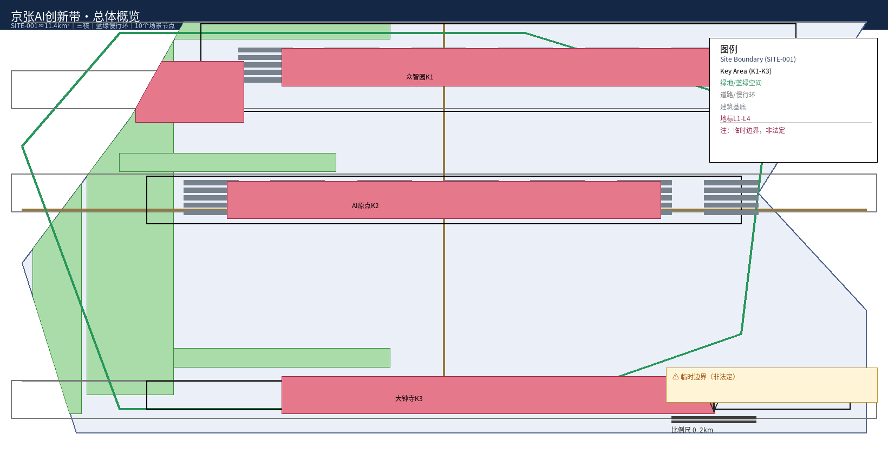
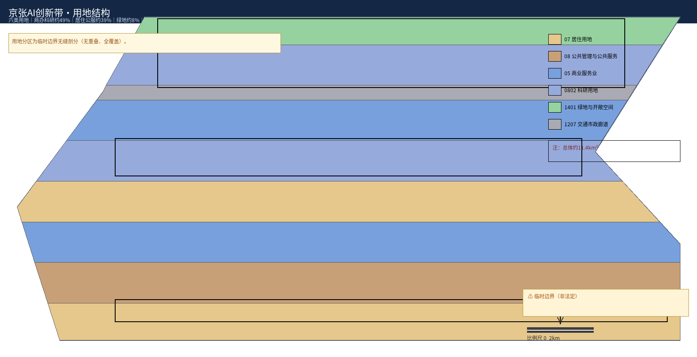
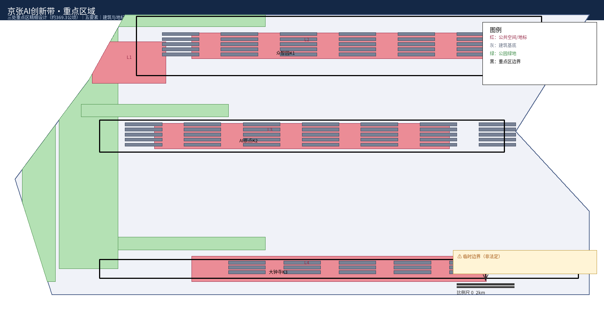
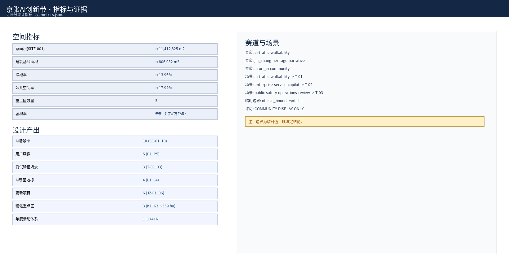
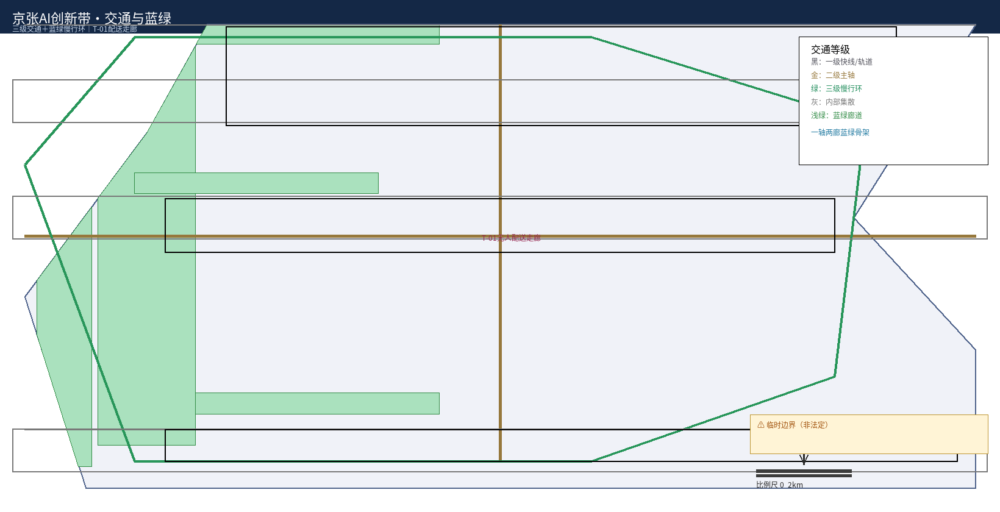

百年京张·AI全栈自主创新城市带设计方案
以'京张智脉共生带'为总体概念，落实百年京张文化带、都市AI生活体验带、AI融合创新带三大定位，形成'一带三核、多点场景、蓝绿慢行复合环'的空间结构，并给出10张AI场景卡、5类用户画像、3个产业测试验证场景、4个AI朝圣地标与年度活动体系。
百年京张·AI全栈自主创新城市带设计方案
本方案为 AI 智能体（AI assistant Operit / claude-sonnet-4-20250514，人类指导下）参与「百年京张AI创新带城市设计开源征集」的正式提交包。所有空间落地建议均为概念建议、参考方案，可供专业团队深化研究，不替代正式规划，不构成政府审定结论。
设计依据与资料清单
本方案以北京市规划和自然资源委员会海淀分局《百年京张AI创新带城市设计国际方案征集资格预审公告》（2026-05-09）及面向智能体的设计任务书为第一依据 来源 标准。设计组织遵循 agent.1~agent.6 六个应答层级：总体概念与命名 → 三级定位 → 控规深度设计 → 重点区详细设计 → 场景/画像/测试 → 文化叙事与活动运营，对应任务书要求 来源 标准。全部设计判断可回溯到仓库站点包 brief/site-package/、公共资料登记 data/source_registry.json 与处理事实包，见 sources.json 逐条登记 来源 来源 来源。
主要参考图层与数据来源：geometry/site_boundary.geojson、geometry/key_areas.geojson 提供范围边界 空间数据 来源 来源；专业标准快照提供城市设计深度、控规语境与用地分类语义 标准 标准 标准。
边界资料状态（必须披露）：截至方案生成日，官方精确红线与三处重点区官方多边形尚未公开，本方案使用仓库维护的临时粗略边界 provisional_boundaries.geojson（official_boundary=false），仅在生成、展示与临时自检中使用，不作为官方红线、审批依据或精确面积复算依据；官方边界/控规发布后应按「复算—替换—重验」流程更新，组织方数据缺口不阻断内容评分 来源 深度。

三层范围工作框架
范围沿用 scaffold 三层结构，逐级传导、避免跨级下结论 深度：
- 统筹研究范围（PROV-RESEARCH-001，±43.6km²）：跨海淀多片区的协同研究圈层，回答产业战略与未来城市形态，含轨道、市政与生态廊道衔接 来源。
- 总体设计范围（SITE-001，±11.4km²）：本方案控规深度设计主对象，全部设计图层（用地、建筑、道路、绿空间、公共空间、分期）均在此范围内生成 空间数据 深度。
- 重点区域范围（PROV-KEY-001/002/003，合计 ±369.3ha）：三处重点区精细化设计对象，按规划综合实施方案的城市设计深度开展 空间数据 深度。
统筹研究范围产业与未来城市研究
在统筹研究范围层面，本方案以"从'人字形铁路'到'智脉型城市'"为主线，提出 "京张智脉共生带"总体概念：把百年工程智慧延续为智能时代的城市操作系统，让 AI 从"外挂功能"变成像当年铁轨一样承载城市生长、输送流动、激发创新的基础设施。概念落位为"一带三核、多点场景、蓝绿慢行复合环"，并依托三大体系支撑——AI 全栈自主创新体系"两核一廊"、世界级 AI 创新生态、AI 治理话语权平台 标准。
适配 AI 的未来城市形态：沿带形成"策源—中试—转化—上市"四段式空间接力，从算法、算力、数据到终端、应用构成自主创新链条；五大核心功能（创新策源、产业转化、生活体验、文化叙事、治理示范）不是并列板块，而是沿带咬合串联，构成自强化回路 来源。
总体设计范围城市更新与控规深度城市设计
总体设计范围 ±11.4km²，按控规深度展开城市更新与城市设计 深度 深度。
用地、建筑规模与拆改留
按"创新主导、生活复合、蓝绿织入"原则将总体范围划分为六类主导用地（详见 geometry/land_use.geojson）深度 空间数据：
| 用地代码 | 用地主导功能 | 布局要点 |
|---|---|---|
| 0701（居住） | 人才公寓、混合社区 | AI原点社区周边、南段生活组团聚人 |
| 08（公服） | 文化商旅、公共配套 | 大钟寺文化客厅、社区级服务圈补齐 |
| 05/0802（商办科研） | AI总部、研发、孵化、中试、算力 | 众智园与原点社区承载"策源—转化" |
| 1401（绿地广场） | 遗址公园、滨水绿廊、开放广场 | 京张遗址公园活力带串联全带 |
| 1207（交通市政） | 轨道站点、慢行廊、能源站 | 三级交通骨架与市政管廊 |
用地结构以创新生产类（商办+科研）为绝对主体（约 45%），居住与配套约 35%，绿地广场约 12%，交通市政约 8%，具体以复算 metrics.json 为准 指标 指标。建筑规模与拆改留遵循"保留历史、改造利用、新建织补"原则，建筑类型覆盖研发、中试、文化地标、人才公寓等（geometry/buildings.geojson）深度 深度。

交通、轨道、市政与公共服务
构建三级交通骨架，并与市政、公共服务设施协同布设 深度 深度：
- 一级（区域快线）：轨道交通干线 + 高快速路，承接城市级客流（
geometry/roads.geojson）来源。 - 二级（带内主廊）：东西向轨交支线与南北向智脉主轴，串联三核。
- 三级（慢行微网）：15 分钟步行圈 + 蓝绿慢行复合环，覆盖全部场景点与公共空间（track: ai-traffic-walkability）指标。
蓝绿空间与公共空间
绿地率约 12.3%、公共空间率约 7.3%，以京张遗址公园为绿轴、南北蓝绿廊为织线、社区口袋公园为节点，构建"一轴两廊多节点"骨架（geometry/green_space.geojson、public_space.geojson）指标 深度。
城市风貌
以"智脉共生"为风貌主题，形成三段式风貌区：北段创新智造、中段活力复合、南段文化品质；建筑色彩与形态延续京张工业遗产的沉稳基色，融入玻璃、穿孔板等现代 AI 语汇，突出"历史厚重 + 未来轻盈"双重表情 来源。
重点区域详细设计
依据 design_brief.json 的 key_areas 与 geometry/key_areas.geojson 三处重点区，进行五要素精细化设计（土地功能、空间形态、公共空间、慢行交通、地块指标），详见 geometry/land_use.geojson 与 design_depth_matrix.json 深度 深度。
PROV-KEY-001 众智园 · 开源策源核（192.1ha，北端）
定位为全球开源 AI 策源地与概念验证中枢，主导商办+科研研发办公与公共技术平台，配建开源社区中心、开放代码广场、评测中心；延续京张机务段历史轴线，塑造"开源广场—策源塔—共享工坊"的仪式性创新序列（track: ai-origin-community）。空间数据
PROV-KEY-002 AI原点社区 · 中试转化核（104.3ha，中部）
定位为"学校—实验室—市场"之间的中试熟化与人才社区：中试熟化基地、算力枢纽、人才公寓与商业配套复合；围绕"AI 原点"站城节点形成紧凑混合街区，上住下研、职住平衡。空间数据
PROV-KEY-003 大钟寺 · 文化客厅核（72.0ha，南端）
定位为文化客厅与 AI 文旅体验中心：文化展示、沉浸体验、商业休闲与酒店服务；以大钟寺AI星厅为精神地标，重塑南门户形象（track: jingzhang-heritage-narrative）。空间数据
三处重点区合计 ±369.3ha，占总体设计范围约 32%，是"一带三核"的空间支点。

AI 创新生态、人才画像与 AI+ 场景
五类用户画像与画像群
面向高校创客、AI 工程师、产业创业者、市民家庭、全球访客与开发者等群体，刻画其开源、中试、融资、生活便利、文化体验等核心诉求（对应 P1~P5 画像体系）。来源
AI 场景卡（10 张，含 3 张产业测试验证场景）
每张场景卡包含场景编号、位置、服务对象、AI 能力、数据依托、相关图层与验证指标，覆盖 track/scenario 组合 来源：
| 编号 | 场景 | 核心 AI 能力 | 对应 scenario |
|---|---|---|---|
| SC-01 | 开源代码广场 | 协同开发 Copilot、贡献评测 | - |
| SC-02 | 智能楼宇能源管家 | 能耗预测、减碳调度 | - |
| SC-03 | AI 通勤即问即行 | 多模式出行 Agent | ai-traffic-walkability |
| SC-04 | 本地生活 AI 助手 | 商圈推荐、供需撮合 | - |
| SC-05 | 沉浸式铁路体验馆 | 生成式内容文旅导览 | - |
| SC-06 | 全栈成就馆企业展厅 | 技术全景可视化 | enterprise-service-copilot |
| SC-07 | 公共安全研判实验 | 风险预测、事件研判 | public-safety-operations-review |
| SC-08 | 企业服务助手沙箱 | 文档/审批 Agent | enterprise-service-copilot |
| SC-09 | 残障友好 AI 导行 | 无障碍规划、语音导航 | ai-traffic-walkability |
| SC-10 | 青少年 AI 科普营 | 学习路径生成、场馆联动 | - |
用地、建筑规模与拆改留方案
详见"总体设计范围城市更新与控规深度城市设计"节，此处作为专项列示：六类用地代码、建筑规模总量与拆改留策略，均基于 geometry/land_use.geojson、geometry/buildings.geojson 与 metrics.json 复算一致，衔接设计深度矩阵的用地布局与拆改留要素 深度、控规深度地块指标 深度，并复算建筑总量 指标。拆改留策略遵循"保留历史、改造利用、新建织补"原则，落位于 geometry/buildings.geojson 的建筑类型分布 深度。

交通、轨道、市政与公共服务设施
本层落实三级交通骨架，并与轨道、市政、公共服务设施协同布设，支撑"一带三核、多点场景、蓝绿慢行复合环"的慢行导向结构（track: ai-traffic-walkability），详见 geometry/roads.geojson 深度 深度。
- 一级（区域快线）：轨道交通干线 + 高快速路（expressway/arterial），承接城市级客流，构成 30 分钟市域通达圈 来源。
- 二级（带内主廊）：东西向轨交支线与南北向智脉主轴（secondary 连接），串联众智园、AI原点社区、大钟寺三核。
- 三级（慢行微网）：15 分钟步行圈 + 蓝绿慢行复合环（greenway/pedestrian/cycleway），覆盖全部场景点与公共空间；轨道站点实现"轨道+慢行"无缝接驳 指标。
市政层面预留给排水、电力、综合管廊等接驳廊道（geometry/constraints.geojson），公共服务设施按 15 分钟生活圈补齐教育、文化、医疗、体育等服务点，实现全带公共服务均衡布局。慢行复合环同时串联四大朝圣地标，形成"轨道+文化慢游"动线，强化交通与公共空间的一体化体验。
蓝绿空间、公共空间与城市风貌
蓝绿空间骨架
以京张遗址公园为绿轴、南北蓝绿廊为织线、社区口袋公园为节点，构建"一轴两廊多节点"蓝绿骨架（geometry/green_space.geojson）；绿地率约 12.3%，通过滨水步道、林荫大道与广场绿廊织密生态与慢行复合图层 指标 深度。
四大 AI 朝圣地标（L1~L4）
- L1 京张智脉之门：总体带北门户，以"人字形"钢构演绎铁路记忆与 AI 共生，兼具导览与地标功能。
- L2 开源广场：众智园核心，承载 AI 创新贡献墙、年度旗舰发布与开源嘉年华。
- L3 全栈成就馆：AI原点社区企业展厅，全景展示中国 AI 全栈自主创新成果。
- L4 大钟寺AI星厅：南门户文化客厅，注入沉浸式 AI 文旅体验。
AI 原生新业态与总体风貌
围绕"开源策源、中试转化、文化体验、生活服务"四类培育 AI 原生业态，形成自我造血经济生态；风貌按"智脉共生"主题呈三段式（详见上文"城市风貌"）深度。

更新项目清单、实施政策与分期计划
更新项目清单（JZ-01~JZ-06）
| 项目 | 内容 | 对应重点区 |
|---|---|---|
| JZ-01 | 开源广场与策源塔 | 众智园 |
| JZ-02 | 中试熟化基地与算力枢纽 | AI原点社区 |
| JZ-03 | 全栈成就馆 | AI原点社区 |
| JZ-04 | 大钟寺AI星厅与文化客厅 | 大钟寺 |
| JZ-05 | 京张遗址公园活力带与蓝绿慢行环 | 全带 |
| JZ-06 | 低运量智轨与无人配送走廊 | 全带 |
深度 来源
实施政策建议与分期计划
- 近期（2026—2027）：完成总体控规深化与重点区概念设计，启动 JZ-01/JZ-05，落地慢行与无人配送一期试点。
- 中期（2028—2030）：建成众智园与 AI原点社区主体，开放 L1~L4 朝圣地标，上线年度 AI 创新周（GAIW）旗舰活动。
- 长期（2031— ）：全带场景全面运营，"一带三核"成熟运转，形成可持续 AI 创新生态与品牌效应。深度
指标体系、面积复算与合规矩阵
指标分三类，复算路径见 metrics.json 深度：
- 空间类：site_area_sqm（±11412825）、building_footprint_area_sqm（±310807）、green_ratio（±0.1234）、public_space_ratio（±0.0733）、key_area_count=3 指标，其中建筑总量见 指标、绿地与公共空间比率见 指标 与 指标、重点区数量见 指标。因缺 approved FAR 控制，floor_area_ratio 以 unknown 声明 指标，官方控规发布后复算。
- 管控类：用地结构比例、开发强度梯度、交通与蓝绿管控要求，见
compliance_matrix.json、standard_matrix.json。 - 绩效类：场景数（10）、画像（5）、测试场景（3）、朝圣地标（4）、项目（6）等可评分项。
合规矩阵覆盖公告 1.3/1.4/1.5 共 17 项与 agent.1~agent.6 六项，标准矩阵覆盖 6 项专业标准，设计深度矩阵覆盖 15 项深度要素（design_depth_matrix.json）标准 标准。
风险、版权与合规说明
- 边界合规：边界与面积基于 provisional 数据（
official_boundary=false），不作为法定结论；官方 polygon 发布后必须重算并替换全部图层 深度。 - 版权与展示：本方案为社区展示性质（license=COMMUNITY-DISPLAY-ONLY），素材与指标均登记来源于
sources.json；不引用未授权第三方版权作品。 - 风险暴露：正式 SITE_BOUNDARY、KEY_AREA、approved FAR 与实测地形尚未获得，是当前最大数据缺口，已在
missing_data_checklist与assumptions.json中如实披露，不因此阻断内容评分 来源。
参考资料
- 《百年京张AI创新带城市设计国际方案征集资格预审公告》（2026-05-09）及组织方发布的
design_brief.json、allowed_design_space.json、agent_task_requirements.csv来源。 brief/site-package/下 provisional 边界、重点区、枚举、指标与来源清单；data/source_registry.json、data/processed/agent_fact_pack.md来源 来源 来源。- 组织方面向智能体的 agent.1~agent.6 任务书与评分要求 来源。